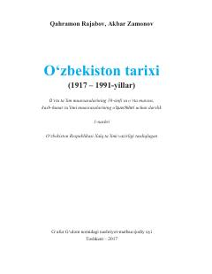

OT10-sinf uchun O'zbekistonning sovet davri tarixini o'rgatuvchi rasmiy darslik.
Ushbu darslik O'zbekistonning 1917–1991-yillar oralig'idagi sovet davri tarixini yoritadi. 10-sinf o'quvchilari hamda o'rta maxsus va kasb-hunar ta'limi muassasalari talabalari uchun mo'ljallangan bo'lib, Turkiston o'lkasida sovet hokimiyatining o'rnatilishidan tortib O'zbekiston mustaqilligiga qadar bo'lgan davrni qamrab oladi. Kitob O'zbekiston Respublikasi Xalq ta'limi vazirligi tomonidan tasdiqlangan va 2017-yilda nashr etilgan.